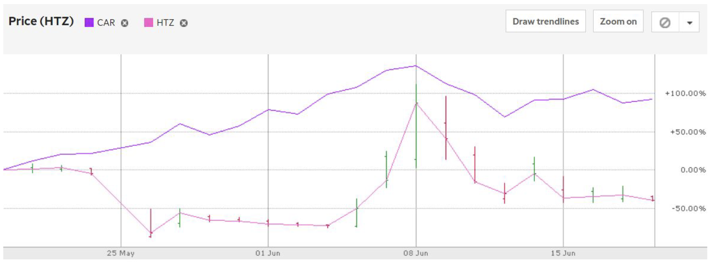

How Investing Became My New Fantasy Basketball
By Devang Patel | July 8, 2020
I was distraught by the NBA season’s cancellation in early March. Fantasy basketball had become a large part of my life, I was fresh off of a championship in my league, and I was almost guaranteed a second one this year. Coming home from school and finishing the semester at home was devastating, yet it may have been a blessing in disguise because I began actively managing my own portfolio. In doing so, I realized that the skills I gained in fantasy basketball were highly applicable to trading.
Starting with a blank portfolio was the same as beginning my draft. Who were the top players I wanted to build around? In basketball, I stuck to players who finished consistently well down the stretch, taking Andre Drummond and Russell Westbrook in the first two rounds. Drummond was an easy pick for a league dependent on field goal efficiency and rebounding, as was Westbrook, arguably the greatest stat-stuffer of all time. Understanding the rules and values each player brought let me evaluate them holistically. I treated my portfolio the same way, picking companies such as JP Morgan, Facebook, Netflix, and Target to build around. Consistency was something I needed in order to mitigate risk, and these companies all had great track records, notwithstanding struggles around the March 23rd market lows. They were worthy investments in my eyes, star players that could be relied upon to perform day-in and day-out.
After selecting my top players/stocks, I went to see which players could be primed for a breakout. Similar to Brandon Ingram getting traded to the Pelicans and exploding onto the scene as a clear All-Star caliber player, DraftKings was my breakout stock when it performed significantly well in anticipation of the return of sports. Both moves substantially helped push my portfolio/team to the next level. I took an educated chance on what made logical sense, without delving deeply into the financials and multiples, and I relied on knowledge I had about the likely immediate effects of headline-grabbing news. I lacked the technical knowledge to carry out those analyses, forcing me to rely on my intuition alone. Nonetheless, for a stock trading 700x earnings to have a run up like that, taking 40% profits and getting out while ahead was the approach I decided to take. The same was true for the airlines, which I believed were primed to breakout as the economy reopened. As a result of accurately predicting these breakouts , my investments in DraftKings, American Airlines, and United Airlines have been three of my highest grossing investments. But once again, my fantasy basketball days helped me to avoid a classic pitfall. I learned that just because Coby White is on a hot streak doesn’t mean he will sustain his elevated output. It is crucial to analyze what factors led to the streak. Did the starting point guard get hurt, or were they in rebuilding mode? It’s hard to know for sure, but erring on the side of caution was the best thing to do. In the stock market, selling high is the same as trading a player following a good run. Yes, they may continue the streak, but once you’ve already made your gains on that asset, it might be the time to get out.

When you think Hertz and Avis, you think direct competition, and rightly so, but for this analogy, it’s best to view them as teammates. If Anthony Davis gets hurt or traded, it would be reasonable to assume that LeBron James, Davis’ teammate on the Lakers, may now have a larger workload and a more substantial statline. As soon as Andre Drummond was traded from the Pistons to the Cavaliers, I picked up Christian Wood, Drummond’s direct replacement. This move was pivotal in elevating my team’s performance. To draw a business parallel, Hertz declared bankruptcy on May 22, causing their stock price to plummet. This sudden demise of Hertz helped skyrocket the Avis stock, and my dad capitalized on this by gaining 80% on his investment in Avis in roughly a week. This really intrigued me, because it helped me understand where to look for potential breakout companies.
The fundamentals of fantasy and investing align more than one might expect, and I’m grateful I found these similarities. T he complementary nature of these lessons has helped me amplify my gains in both realms . As I move forward, I am intrigued by what other similarities may emerge from this analogy, and if my investment experience can now aid my fantasy strategy. For those of you with fantasy experience who may be reading this to get a start with investing, know that you’re already ahead of the game and might know more than you think.